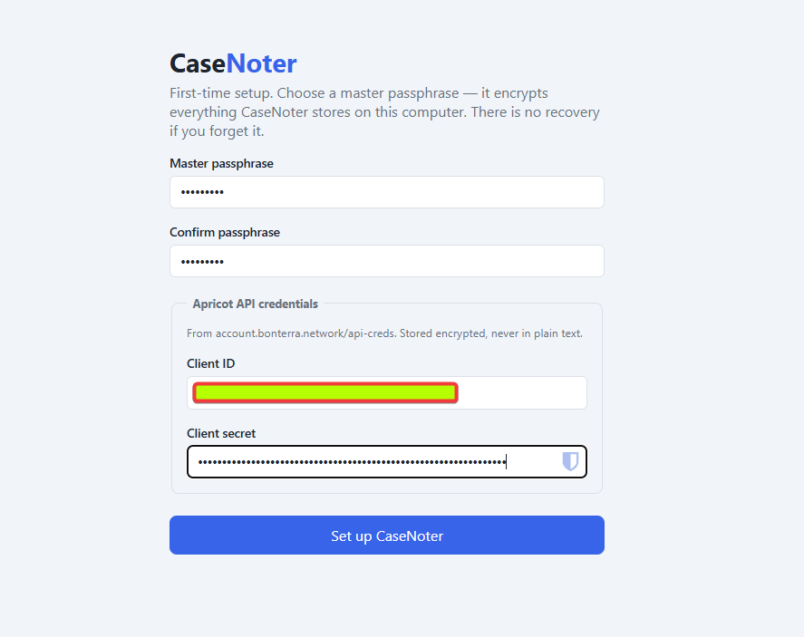
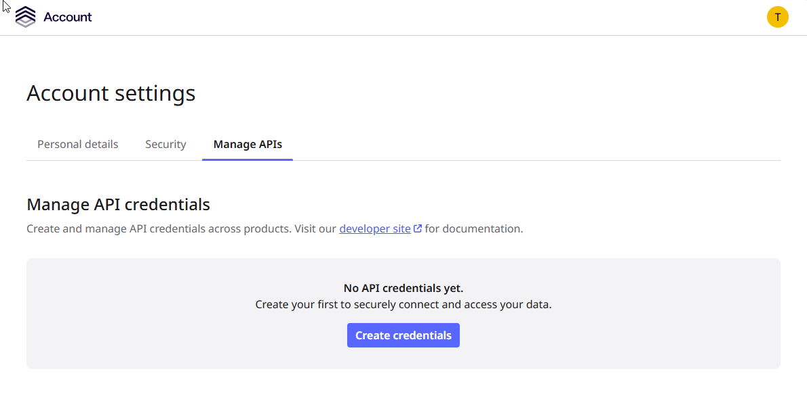
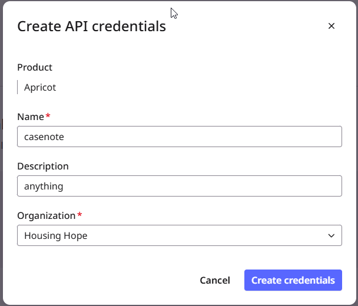
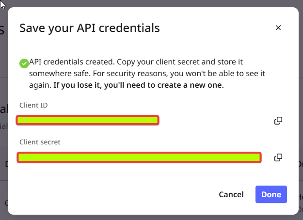
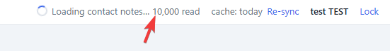
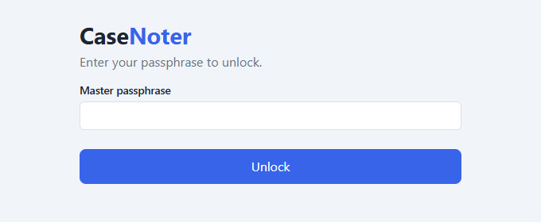
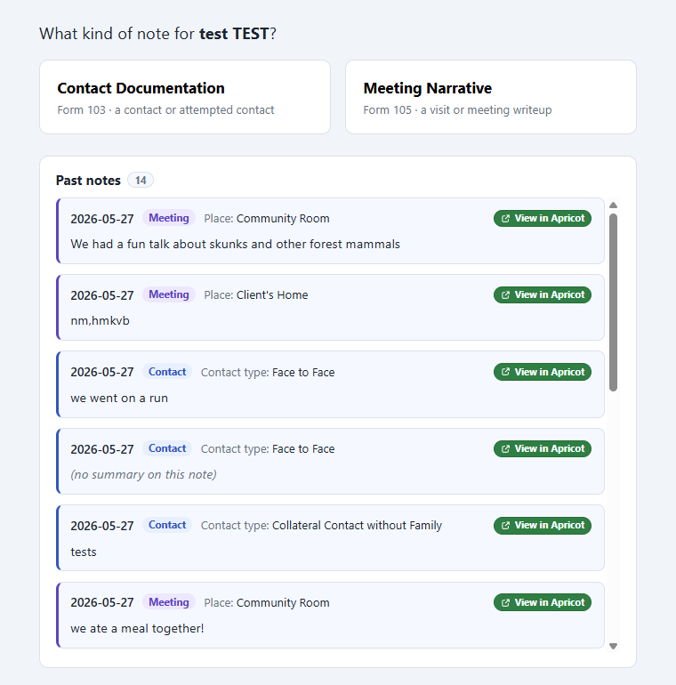
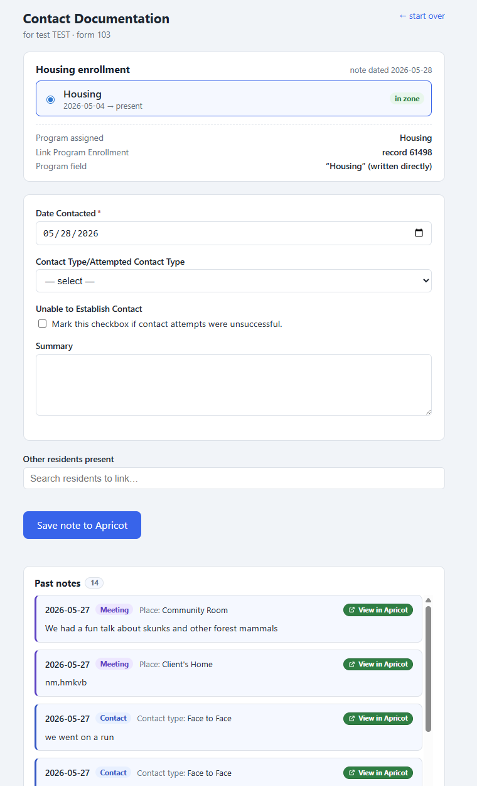
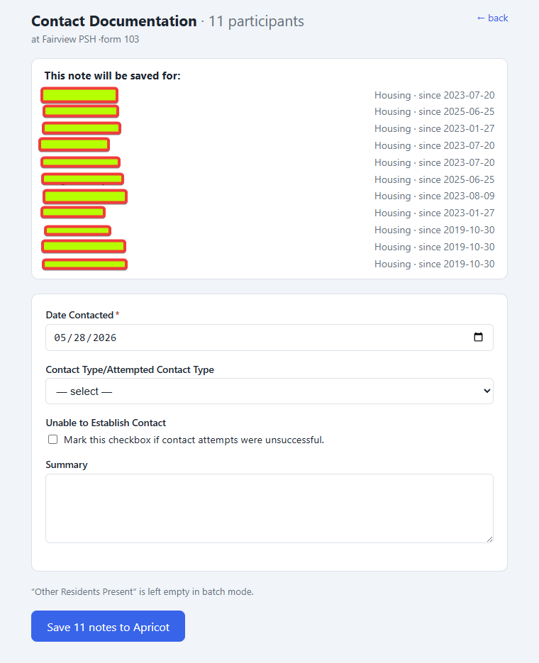

Getting Started with CaseNoter
What you receive
The download is a zip file with three items. Keep them together in one folder you will not lose, such as C:\CaseNoter\.
- casenoter-helper.exe is the background helper that connects the app to Apricot. You receive this once.
- casenoter.html is the app itself. When the app is updated, you will be emailed a new copy to save over the old one.
- STAFF_README.txt is a short text version of these instructions.
First-time setup
You only do this once. After setup, starting CaseNoter each day takes a few seconds.
1 Create a folder and run the helper
Put casenoter-helper.exe and casenoter.html together in a folder you will remember, then double-click casenoter-helper.exe.
A small black window opens and stays open. This is the background helper. You do not need to type anything in it. Leave it open while you use CaseNoter.
2 Open CaseNoter in your browser
The helper opens CaseNoter in your web browser. If it does not open on its own, type http://127.0.0.1:8765 into the address bar. CaseNoter runs on your own computer, not on the internet.
3 Choose a master passphrase
On the setup screen, choose a master passphrase of at least 8 characters, then type it again to confirm. This passphrase encrypts everything CaseNoter stores on your computer.
The same screen asks for your Apricot API credentials. The API credentials tab above explains where to get them.

Getting your Apricot API credentials
CaseNoter needs a Client ID and Client Secret from Bonterra so it can connect to Apricot. You create these once in the Bonterra account portal.
1 Open the 'Manage APIs' page
On the setup screen, click the link 'Get your API credentials from Bonterra'. It opens account.bonterra.network/api-creds. Log in, open the 'Manage APIs' tab, and click 'Create credentials'.

2 Fill in the credential
In the 'Create API credentials' window, select the Apricot product, enter a name such as 'casenote', and choose your organization. Then click 'Create credentials'.

3 Copy the Client ID and Client Secret
Bonterra shows your Client ID and Client Secret. Copy each one into the matching field on the CaseNoter setup screen.

4 Finish setup
With your passphrase and credentials entered, click 'Set up CaseNoter'. CaseNoter then builds a local copy of participant enrollments. This takes about 30 to 60 seconds the first time. After that, startup is quick.

Daily use
Once setup is done, the steps are the same each day.
1 Unlock
Double-click casenoter-helper.exe to open the helper, let your browser open CaseNoter, then type your passphrase and click 'Unlock'.

Writing a note for one participant
Use this when you are documenting a single person.
2 Find a participant and choose a note type
Search by name or HMIS number. Only participants with a Housing enrollment appear. Select the participant, then choose the note type: 'Contact Documentation' for a contact or attempted contact, or 'Meeting Narrative' for a visit or meeting writeup.

3 Fill in the note and save
CaseNoter matches the Housing enrollment for the note's date and highlights it. Check that it is correct, especially if the participant has more than one enrollment. Fill in the fields (Date Contacted, Contact Type, Summary, and so on), add any other residents present if needed, then click 'Save note to Apricot'. The participant's past notes are listed below the form, so you can review their recent documentation without leaving the page.

Writing notes for a whole site
When the same contact or meeting applies to everyone at a site, you can write the note once and save it to each resident, instead of entering it one person at a time. Each resident still gets their own separate note in Apricot.
1 Switch to 'Browse by site'
At the top of the screen, click the 'Browse by site' tab. Choose a site from the list on the left, such as Fairview PSH. CaseNoter lists everyone currently enrolled there, with a count such as 'Fairview PSH · 23 enrolled'.
2 Choose who the note is for
Check the residents you want to document. Each person shows their HMIS number and enrollment start date. You can also use the buttons above the list:
- 'Select all' selects everyone enrolled at the site.
- 'Select all heads of household' selects only heads of household, which is useful when you want one note per family.
- 'Clear' removes the current selection.
A bar at the bottom shows how many you have selected, such as '11 participants selected'. Click 'Write note to 11' to continue.
3 Choose the note type
CaseNoter asks what kind of note to write for the selected residents. Choose 'Contact Documentation' or 'Meeting Narrative', the same two types used for single notes.
4 Write the note once
Under 'This note will be saved for:' you will see the full list of residents, each with their housing program and enrollment date. CaseNoter has already matched each resident to their own enrollment at the site, so you do not choose enrollments one by one. Fill in the fields once, and they apply to everyone on the list.

5 Save the notes
Click 'Save 11 notes to Apricot'. CaseNoter creates a separate note for each resident, against that resident's own enrollment, and shows a result for each one.
If a note does not go through, for example if the connection drops, you will see a message such as '10 saved to Apricot · 1 still queued (retry from the top bar)'. Notes that did not save are kept on your computer. Use the pending button in the top bar to try again once you are back online. Click 'Done' when you are finished.
Things to know
A few details worth knowing.
Notes saved while offline
CaseNoter saves each note on your computer first, then sends it to Apricot. If the connection drops while saving, the note is not lost. The top bar shows a pending count. Click 'sync now' once you are back online. A note is only removed from your computer after Apricot confirms it was saved.
Re-sync
The list of participants and enrollments refreshes on its own every two weeks. If a new enrollment is not showing up, click 'Re-sync' in the top bar to pull a fresh copy. This takes about 30 to 60 seconds.
Lock compared with closing
'Lock' locks the screen and asks for your passphrase again, but the helper keeps running. Closing the black window stops the helper, and the CaseNoter tab will not work again until you start it.
Updating the app
When you receive a new casenoter.html by email, save it into your CaseNoter folder, replacing the old one, and refresh your browser. The helper does not change. You do not need a new one unless told otherwise.
Common problems
| Problem | Fix |
|---|---|
| Blue 'Windows protected your PC' message | Click 'More info', then 'Run anyway'. |
| Browser does not open | Go to http://127.0.0.1:8765 in your browser. |
| 'Helper not detected' warning on the page | Make sure the black helper window is still open. |
| Cannot find a participant | Click 'Re-sync'. If they are still missing, they likely have no Housing enrollment. |
| Forgot the passphrase | It cannot be recovered. The data must be reset and first-time setup done again. Contact your administrator. |
| Note stays 'pending' | Click 'sync now' once your connection is back. |
| Enrollment does not match | Choose the correct enrollment from the list. |